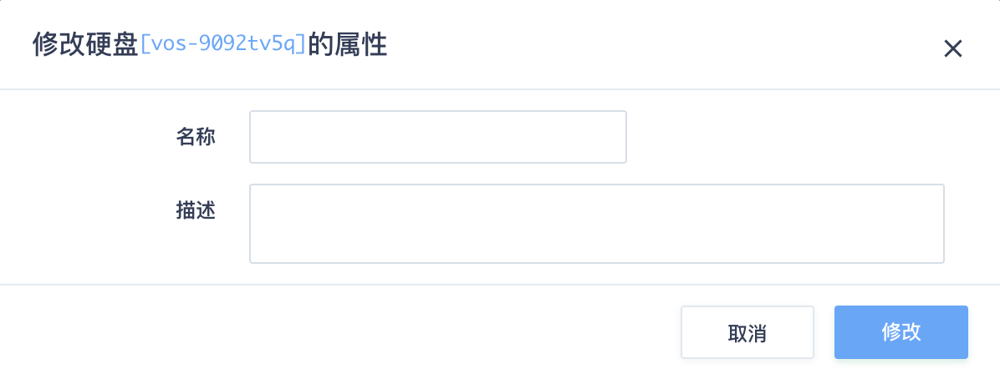
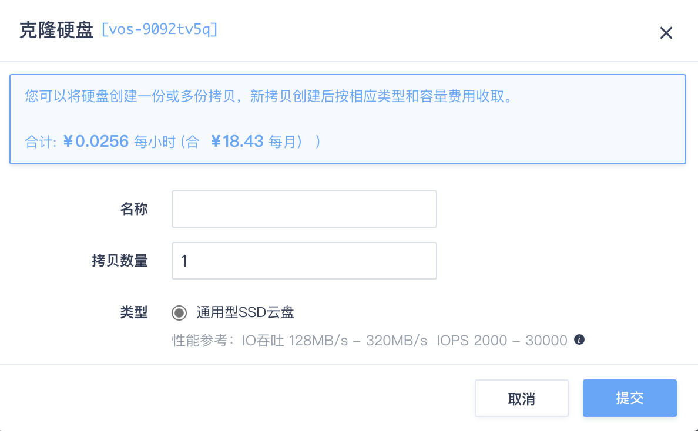
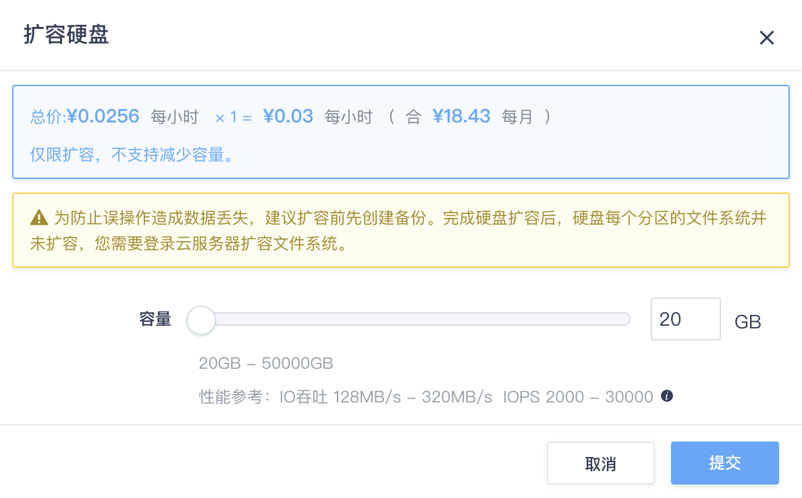
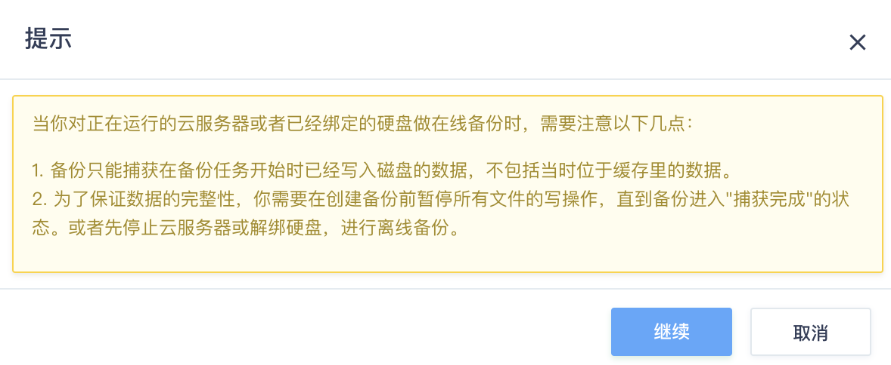
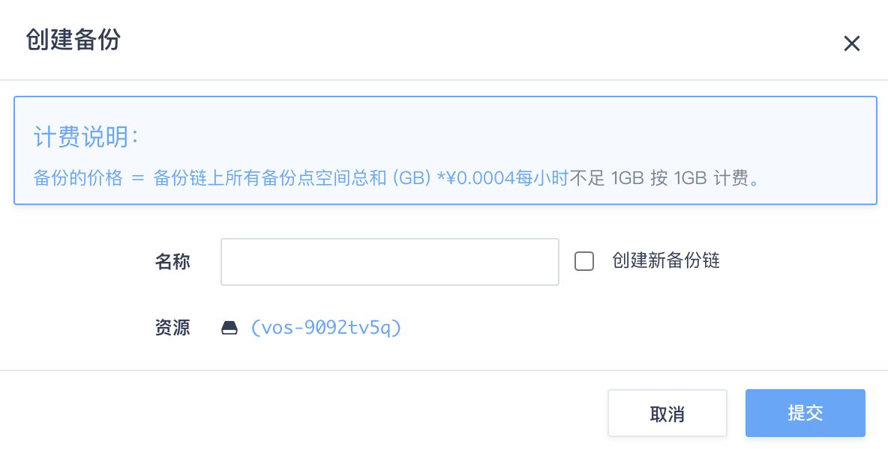
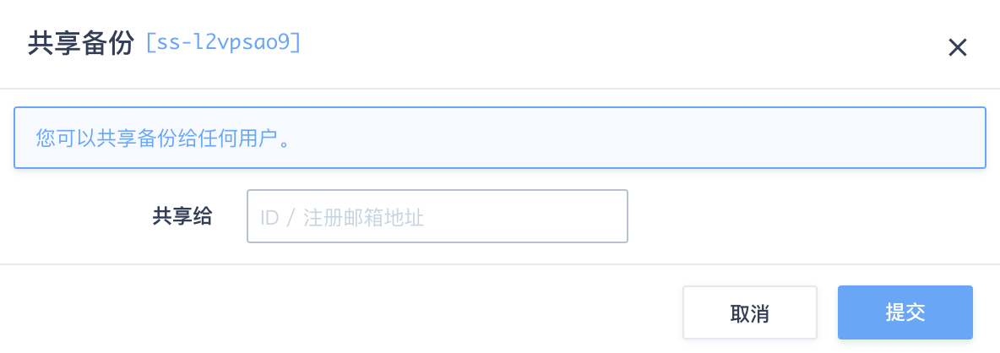
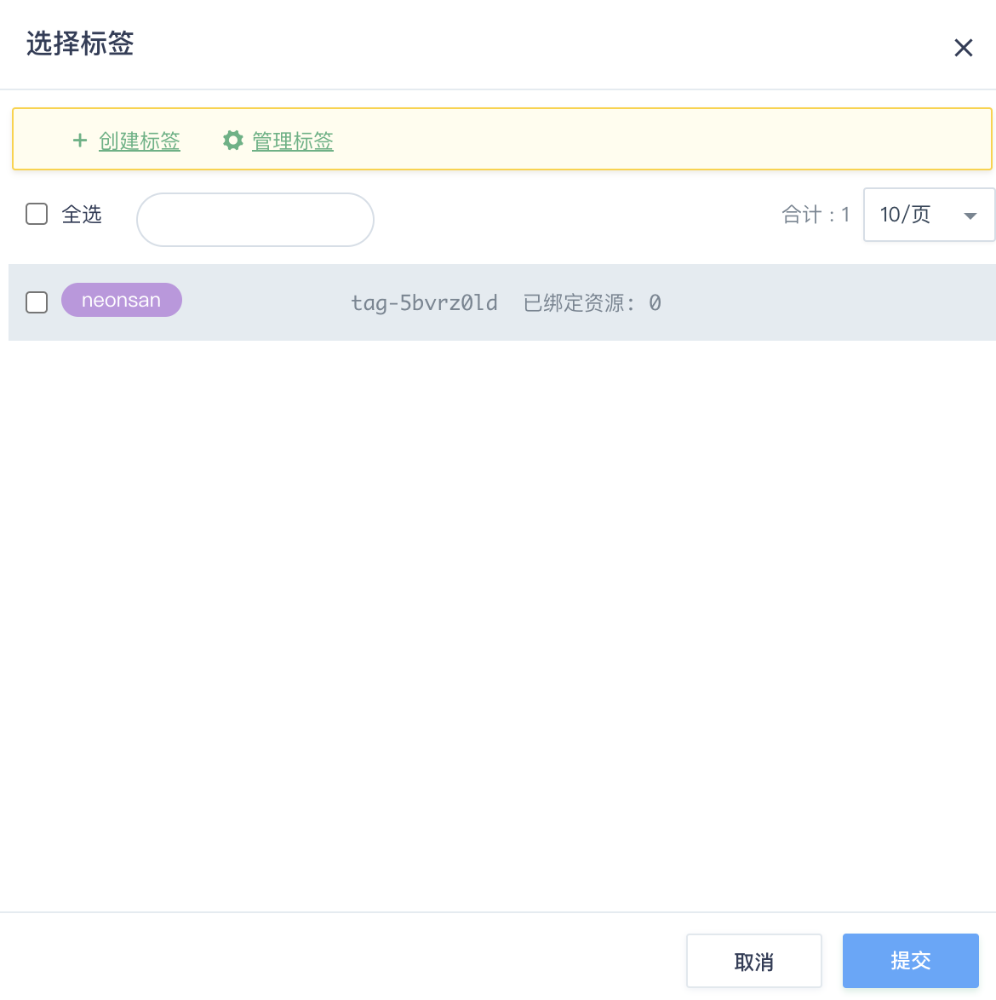
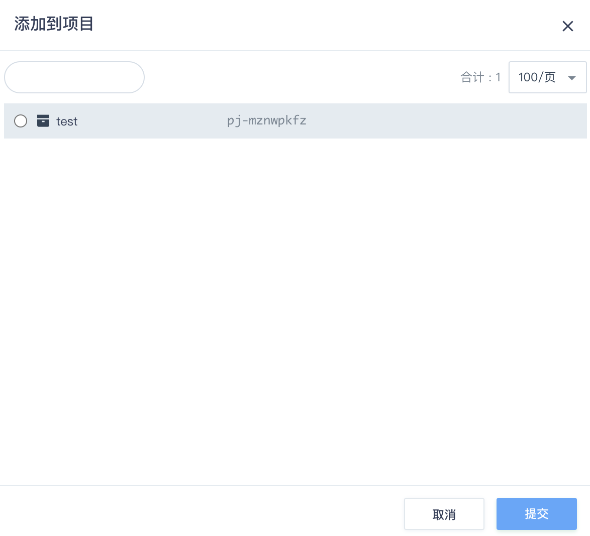

企业级分布式 SAN
简介
企业级分布式 SAN (NeonSAN) 是基于全闪存架构提供的分布式 SAN 服务，单块硬盘容量最高 20TB， I/O 吞吐性能最高可达 350 MB/s， IOPS 最高 50000，适用于对 IOPS、吞吐、容量和稳定性要求很高的业务，例如：企业核心数据库 Oracle RAC 及 SQL Server 故障转移集群、企业级分布式数据库 RadonDB、弹性裸金属服务器高可用架构、大数据分析与计算、以及高可用容器集群等。
创建 NeonSAN 硬盘
-
登录管理控制台，在顶部导航中选择 产品与服务 > 存储服务 > 共享存储，进入如下界面。

-
点击创建进入如下界面。

-
设置 NeonSAN 的基本信息。
| 参数名称 | 参数说明 |
|---|---|
| 计费方式 | 支持预留方式和按需计费。 短期需求建议选择按需计费，长期稳定需求建议选择预留计费。 具体费用详情请参考页面提示。 |
| 合约有效期 | 选择预留方式计费时，需要设置。 |
| 自动续约 | 选择预留方式计费时，需要设置。 开启自动续费需要设置续费时长，不开启则无需设置。 |
| 名称 | 企业级分布式 SAN (NeonSAN) 的名称。 |
| 数量 | 创建数量。根据实际需求输入数量，可批量创建多个。 |
| 可用区 | 创建的企业级分布式 SAN (NeonSAN) 所属可用区。 |
| 容量 | 设置企业级分布式 SAN (NeonSAN) 的最大容量。 拖动容量条块或输入容量值进行设置。不同容量对应不同性能，可根据页面的性能参考提示进行设置。 |
- 点击提交。当状态显示为“可用”时，表示创建成功。
硬盘操作
加载硬盘
方式一：
-
右键点击已创建NeonSAN，选择加载硬盘到云服务器 ，或选中条目，点击更多操作 > 加载硬盘到云服务器 ，进入如下界面。

-
选择需要加载该企业级分布式 SAN (NeonSAN) 的云服务器，点击提交，即可挂载到指定云服务器。
说明：
企业级分布式 SAN(NeonSAN) 支持被挂载至基础型、企业型 e2 和 GPU 云服务器上，且一块 NeonSAN 硬盘可以同时挂载到多台云服务器。如果您将一块 NeonSAN 硬盘绑定到多个云服务器上， 请确保使用集群文件系统，例如 OCFS2, 否则磁盘可能会损坏。
方式二：
-
在左侧菜单栏中，选择计算 > 云服务器，进入云服务器页面。
-
右键点击要挂载的云服务器，单击更多操作，选择加载硬盘，弹出硬盘选择界面。

-
勾选需要加载的NeonSAN硬盘，单击提交。
修改名称或属性
-
右键单击NeonSAN硬盘，选择修改。
 -
修改企业级分布式 SAN (NeonSAN) 的属性，包括名称和描述，然后点击修改 。
克隆硬盘
-
右键单击NeonSAN硬盘，选择克隆硬盘 。
 -
在名称框填入名称，写入拷贝数量，类型选择企业级分布式 SAN (NeonSAN) ，点击提交 。
当状态显示为“可用”时，表示克隆成功。
扩容硬盘
-
右键单击NeonSAN硬盘，选择扩容 。
 -
调整硬盘容量，点击提交。
备份硬盘
-
右键单击NeonSAN硬盘，选择创建备份 ，弹出提示框，点击继续。
 -
在名称框里填入名称，根据需要选择创建新备份链，点击提交 。

备份配置
-
点击企业级分布式 SAN (NeonSAN) 条目，进入备份配置界面。

-
右键点击备份链ID，显示备份配置菜单项。

修改备份名称或描述
-
点击 修改 ，进入如下界面：

-
在名称填入要修改成的名称，在描述框里输入新的描述，点击提交 。
基于备份新建硬盘
-
点击创建硬盘 ，进入如下界面：

-
在名称框里填入新硬盘的名称，点击提交 。
当新建硬盘的状态显示为“可用”时，表示新硬盘已经创建成功。
共享备份
-
点击 共享备份 ，进入如下界面：
 -
可以选择共享给子账号还是共享给其他账号，选择要共享给的子账号或填写要给共享的其他用户 ID/ 注册邮箱地址，点击提交 。鼠标右键双击备份链接入备份属性修改界面，可以看到共享列表，里面有已经添加成功的共享账号列表。
备份属性修改
-
点击备份链ID，或者在备份链条目下面，可以看到备份链结构示意图。

-
鼠标左键点击备份链右侧的 … ，可以选择对备份链的修改、创建硬盘、回滚、跨区复制备份和删除。

标签管理
右键点击企业级分布式 SAN（NeonSAN）硬盘，选择标签 > 绑定，可以为已经创建的企业级分布式 SAN (NeonSAN) 绑定标签。
如果没有标签或已有标签不适用，可以选择创建标签 。
加入项目
-
右键点击企业级分布式 SAN（NeonSAN）硬盘，选择项目 > 加入。
 -
选择需要添加到的项目，点击提交将硬盘添加到项目，回到硬盘列表可以查看硬盘所属的项目。

如果没有项目或已有项目不适用，可以在导航栏选择项目 > 创建新的项目进行创建。
硬盘监控
当企业级分布式 SAN (NeonSAN) 挂载到云服务器时，可以点击条目，查看监控情况，界面如下：

硬盘 IOPS 和硬盘吞吐量打开时，会展示硬盘 IOPS 、硬盘吞吐量数据以及硬盘使用率情况。